Standalone C++ RAII wrapper for Fortran fitpack_parametric_curve. More...
#include <fpParametricCurve.hpp>
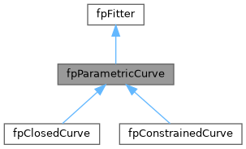
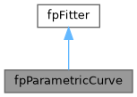
Public Member Functions | |
| fpParametricCurve () | |
| Default constructor - allocates new fitpack_parametric_curve. | |
| ~fpParametricCurve () override | |
| Destructor - deallocates if owned. | |
| fpParametricCurve (const fpParametricCurve &other) | |
| Copy constructor - deep copy. | |
| fpParametricCurve & | operator= (const fpParametricCurve &other) |
| Copy assignment - deep copy. | |
| fpParametricCurve (fpParametricCurve &&other) noexcept | |
| Move constructor - transfer ownership. | |
| fpParametricCurve & | operator= (fpParametricCurve &&other) noexcept |
| Move assignment - transfer ownership. | |
| fpParametricCurve (fitpack_parametric_curve_c &c_wrapper, bool move=false) | |
| Construct from existing C wrapper (takes ownership if move=true) | |
| fpParametricCurve (fitpack_parametric_curve_c &c_wrapper, ViewTag) | |
| Non-owning view ctor: bit-copy the C handle, mark is_pointer=true. Used by parent classes' polymorphic accessors to wrap a base-class handle as the correct concrete subtype. | |
| bool | is_allocated () const override |
| Check if object is allocated. | |
| bool | is_pointer () const override |
| Check if this is a non-owning pointer. | |
| const char * | c_type_name () const override |
| Return the C wrapper struct name for this class (e.g. "fitpack_parametric_curve_c"). | |
| const char * | cpp_type_name () const override |
| Return the fully-qualified C++ class name for this class. Owned by the C++ layer — does not round-trip through Fortran. | |
| fitpack_parametric_curve_c & | c_handle () |
| Get underlying C wrapper (for interop) | |
| const fitpack_parametric_curve_c & | c_handle () const |
| Get underlying C wrapper (const, for interop) | |
| fpFitter & | as_parent () |
| Upcast to parent type (reference, no copy) | |
| const fpFitter & | as_parent () const |
| virtual void | new_points (int32_t x_n1, int32_t x_n2, std::vector< double > &x, double *u=nullptr, double *w=nullptr) |
| new_points | |
| virtual void | set_default_parameters () |
| virtual int32_t | new_fit (int32_t x_n1, int32_t x_n2, std::vector< double > &x, double *u=nullptr, double *w=nullptr, double *smoothing=nullptr, int32_t *order=nullptr) |
| new_fit | |
| virtual int32_t | fit (double *smoothing=nullptr, int32_t *order=nullptr, bool *keep_knots=nullptr) |
| virtual int32_t | interpolate (int32_t *order=nullptr, bool *reset_knots=nullptr) |
| virtual int32_t | least_squares (double *smoothing=nullptr, bool *reset_knots=nullptr) |
| virtual std::vector< double > | eval_one (double u, int32_t n_result, int32_t *ierr=nullptr) |
| eval_one | |
| virtual std::vector< double > | eval_many (std::vector< double > &u, int32_t n_result, int32_t *ierr=nullptr) |
| eval_many | |
| virtual std::vector< double > | dfdx (double u, int32_t order, int32_t n_result, int32_t *ierr=nullptr) |
| dfdx | |
| virtual std::vector< double > | dfdx (std::vector< double > &u, int32_t order, int32_t n_result, int32_t *ierr=nullptr) |
| dfdx | |
| virtual std::vector< double > | dfdx_all (double u, int32_t n_result, int32_t *ierr=nullptr) |
| dfdx_all | |
| int32_t | comm_size () const override |
| void | comm_pack (std::vector< double > &buffer) const override |
| comm_pack | |
| void | comm_expand (std::vector< double > &buffer) override |
| comm_expand | |
| double | mse () const override |
| int32_t | core_comm_size () const override |
| void | core_comm_pack (std::vector< double > &buffer) const override |
| core_comm_pack | |
| void | core_comm_expand (std::vector< double > &buffer) override |
| core_comm_expand | |
| void | destroy_base () override |
| std::vector< double > | x_vector () const |
| Deep copy of component 'x' as a std::vector. | |
| std::array< int64_t, 2 > | x_shape () const |
| Extents of component 'x', leading dimension first. | |
| fxArray< double > | x () const |
| Zero-copy fxArray view of component 'x'. | |
| std::vector< double > | u_vector () const |
| Deep copy of component 'u' as a std::vector. | |
| fxArray< double > | u () const |
| Zero-copy fxArray view of component 'u'. | |
| std::vector< double > | sp_vector () const |
| Deep copy of component 'sp' as a std::vector. | |
| fxArray< double > | sp () const |
| Zero-copy fxArray view of component 'sp'. | |
| std::vector< double > | w_vector () const |
| Deep copy of component 'w' as a std::vector. | |
| fxArray< double > | w () const |
| Zero-copy fxArray view of component 'w'. | |
| std::vector< double > | dd_vector () const |
| Deep copy of component 'dd' as a std::vector. | |
| std::array< int64_t, 2 > | dd_shape () const |
| Extents of component 'dd', leading dimension first. | |
| fxArray< double > | dd () const |
| Zero-copy fxArray view of component 'dd'. | |
| std::vector< double > | t_vector () const |
| Deep copy of component 't' as a std::vector. | |
| fxArray< double > | t () const |
| Zero-copy fxArray view of component 't'. | |
| int32_t & | m () |
| const int32_t & | m () const |
| int32_t & | idim () |
| const int32_t & | idim () const |
| bool | has_params () const |
| void | set_has_params (bool value) |
| int32_t & | order () |
| const int32_t & | order () const |
| double & | ubegin () |
| const double & | ubegin () const |
| double & | uend () |
| const double & | uend () const |
| int32_t & | nest () |
| const int32_t & | nest () const |
| int32_t & | knots () |
| const int32_t & | knots () const |
| FP_SIZE | degree () const |
| Spline degree k of the current fit. | |
| FP_SIZE | ndim () const |
| Number of space dimensions of the fitted curve. | |
| template<FP_SIZE dim> | |
| FP_FLAG | new_fit (const std::vector< fpPoint< dim > > &x, FP_REAL smoothing=1000.0, FP_SIZE order=3) |
| Fit a new curve through the points, choosing u by cumulative Euclidean distance. | |
| template<FP_SIZE dim> | |
| FP_FLAG | new_fit (const std::vector< fpPoint< dim > > &x, const std::vector< FP_REAL > &u, FP_REAL smoothing=1000.0, FP_SIZE order=3) |
| Fit a new curve through the points at the given parameter values u. | |
| template<FP_SIZE dim> | |
| FP_FLAG | new_fit (const std::vector< fpPoint< dim > > &x, const std::vector< FP_REAL > &u, const std::vector< FP_REAL > &w, FP_REAL smoothing=1000.0, FP_SIZE order=3) |
| Fit a new curve through the points at parameter values u, with weights w. | |
| FP_FLAG | fit (FP_SIZE order) |
| Refit the current points with a new spline order. | |
| FP_FLAG | fit (FP_REAL smoothing) |
| Refit the current points with a new smoothing. | |
| FP_FLAG | fit (FP_REAL smoothing, FP_SIZE order) |
| Refit the current points with a new smoothing and spline order. | |
| template<FP_SIZE dim> | |
| fpPoint< dim > | eval (FP_REAL u, FP_FLAG *ierr=nullptr) |
| Evaluate the curve at the parameter value u. | |
| template<FP_SIZE dim> | |
| std::vector< fpPoint< dim > > | eval (const std::vector< FP_REAL > &u, FP_FLAG *ierr=nullptr) |
| Evaluate the curve at every parameter value in u. | |
| template<FP_SIZE dim> | |
| fpPoint< dim > | ddu (FP_REAL u, FP_SIZE order, FP_FLAG *ierr=nullptr) |
| Derivative of the given order at the parameter value u. | |
| template<FP_SIZE dim> | |
| std::vector< fpPoint< dim > > | ddu_all (FP_REAL u, FP_FLAG *ierr=nullptr) |
| All derivatives (orders 0..k) at the parameter value u. | |
 Public Member Functions inherited from fpFitter Public Member Functions inherited from fpFitter | |
| virtual | ~fpFitter ()=default |
| const char * | fortran_type_name () const |
| Return the dynamic Fortran type name of the underlying object. | |
| fitpack_fitter_c & | c_handle () |
| Get underlying C wrapper (for interop) | |
| const fitpack_fitter_c & | c_handle () const |
| Get underlying C wrapper (const, for interop) | |
| std::vector< double > | c_vector () const |
| Deep copy of component 'c' as a std::vector. | |
| fxArray< double > | c () const |
| Zero-copy fxArray view of component 'c'. | |
| std::vector< double > | wrk_vector () const |
| Deep copy of component 'wrk' as a std::vector. | |
| fxArray< double > | wrk () const |
| Zero-copy fxArray view of component 'wrk'. | |
| std::vector< int32_t > | iwrk_vector () const |
| Deep copy of component 'iwrk' as a std::vector. | |
| fxArray< int32_t > | iwrk () const |
| Zero-copy fxArray view of component 'iwrk'. | |
| int32_t & | iopt () |
| const int32_t & | iopt () const |
| double & | smoothing () |
| const double & | smoothing () const |
| double & | fp () |
| const double & | fp () const |
| int32_t & | lwrk () |
| const int32_t & | lwrk () const |
| int32_t & | liwrk () |
| const int32_t & | liwrk () const |
Static Public Member Functions | |
| static fpParametricCurve | make_view () |
| Construct an empty (non-owning) wrapper, for use as a view target. | |
Protected Member Functions | |
| fpParametricCurve (NoAlloc tag) | |
| Protected Member Functions inherited from fpFitter | |
| fpFitter (NoAlloc) | |
| Protected constructor for derived classes (does not allocate) | |
| template<typename T> | |
| T * | as () |
| template<typename T> | |
| const T * | as () const |
Additional Inherited Members | |
| Protected Attributes inherited from fpFitter | |
| fitpack_fitter_c | cobj = fitpack_fitter_c_null |
Detailed Description
Standalone C++ RAII wrapper for Fortran fitpack_parametric_curve.
This class provides automatic memory management (RAII) and a natural C++ API for the underlying Fortran fitpack_parametric_curve, without requiring the fortran-arrays library. Array arguments use std::vector<T> for standalone operation. Extends fpFitter (Fortran: extends(fitpack_fitter))
Constructor & Destructor Documentation
◆ fpParametricCurve() [1/6]
|
inline |
Default constructor - allocates new fitpack_parametric_curve.
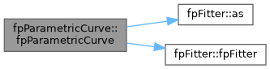
◆ ~fpParametricCurve()
|
inlineoverride |
Destructor - deallocates if owned.
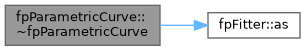
◆ fpParametricCurve() [2/6]
|
inline |
Copy constructor - deep copy.
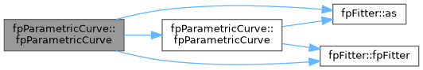
◆ fpParametricCurve() [3/6]
|
inlinenoexcept |
Move constructor - transfer ownership.
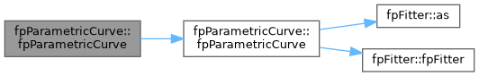
◆ fpParametricCurve() [4/6]
|
inlineexplicit |
Construct from existing C wrapper (takes ownership if move=true)

◆ fpParametricCurve() [5/6]
|
inlineexplicit |
Non-owning view ctor: bit-copy the C handle, mark is_pointer=true. Used by parent classes' polymorphic accessors to wrap a base-class handle as the correct concrete subtype.

◆ fpParametricCurve() [6/6]
|
inlineexplicitprotected |
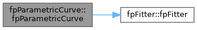
Member Function Documentation
◆ as_parent() [1/2]
|
inline |
Upcast to parent type (reference, no copy)
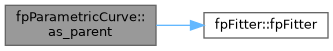
◆ as_parent() [2/2]
|
inline |

◆ c_handle() [1/2]
|
inline |
Get underlying C wrapper (for interop)

◆ c_handle() [2/2]
|
inline |
Get underlying C wrapper (const, for interop)
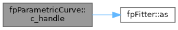
◆ c_type_name()
|
inlineoverridevirtual |
Return the C wrapper struct name for this class (e.g. "fitpack_parametric_curve_c").
Reimplemented from fpFitter.
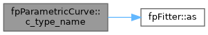
◆ comm_expand()
|
inlineoverridevirtual |
◆ comm_pack()
|
inlineoverridevirtual |
◆ comm_size()
|
inlineoverridevirtual |
◆ core_comm_expand()
|
inlineoverridevirtual |
core_comm_expand
Reimplemented from fpFitter.
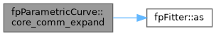
◆ core_comm_pack()
|
inlineoverridevirtual |
◆ core_comm_size()
|
inlineoverridevirtual |
◆ cpp_type_name()
|
inlineoverridevirtual |
Return the fully-qualified C++ class name for this class. Owned by the C++ layer — does not round-trip through Fortran.
Reimplemented from fpFitter.
◆ dd()
|
inline |
Zero-copy fxArray view of component 'dd'.
array_c_from_ptr builds the descriptor from the borrowed pointer and bounds, so the view aliases the Fortran storage directly — nothing is copied and writes through dd()(i, j) land in the object.
- Note
- Only available when the Fortran-Arrays library is present and enabled (HAVE_FXARRAY).
- Warning
- The view is invalidated by any refit, assignment or destroy call on this object; re-read it rather than retaining it.
◆ dd_shape()
|
inline |
Extents of component 'dd', leading dimension first.
- Returns
- All zeros when the component is unallocated.
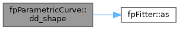
◆ dd_vector()
|
inline |
Deep copy of component 'dd' as a std::vector.
The rank-2 component is flattened COLUMN-MAJOR (Fortran order): element (i, j, ...) — zero-based — is at index i + j * extents[0] + ... Query the extents with dd_shape().
- Returns
- An owning copy, empty when the component is unallocated.
◆ ddu()
|
inline |
Derivative of the given order at the parameter value u.
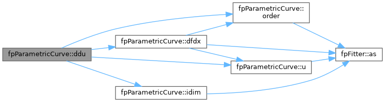
◆ ddu_all()
|
inline |
All derivatives (orders 0..k) at the parameter value u.
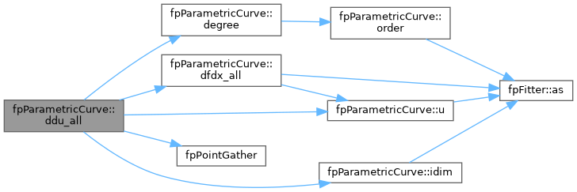
◆ degree()
|
inline |
Spline degree k of the current fit.
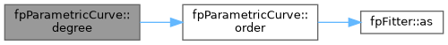
◆ destroy_base()
|
inlineoverridevirtual |
◆ dfdx() [1/2]
|
inlinevirtual |
dfdx
Reimplemented in fpClosedCurve, and fpConstrainedCurve.
◆ dfdx() [2/2]
|
inlinevirtual |
dfdx
Reimplemented in fpClosedCurve, and fpConstrainedCurve.

◆ dfdx_all()
|
inlinevirtual |
dfdx_all
Reimplemented in fpClosedCurve, and fpConstrainedCurve.
◆ eval() [1/2]
|
inline |
Evaluate the curve at every parameter value in u.
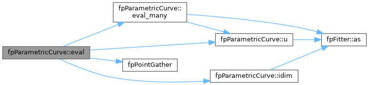
◆ eval() [2/2]
|
inline |
Evaluate the curve at the parameter value u.
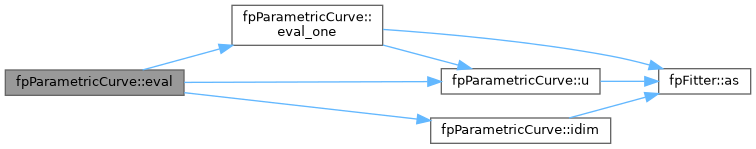
◆ eval_many()
|
inlinevirtual |
eval_many
Reimplemented in fpClosedCurve, and fpConstrainedCurve.
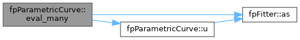
◆ eval_one()
|
inlinevirtual |
eval_one
Reimplemented in fpClosedCurve, and fpConstrainedCurve.
◆ fit() [1/4]
|
inlinevirtual |
Reimplemented in fpClosedCurve, and fpConstrainedCurve.
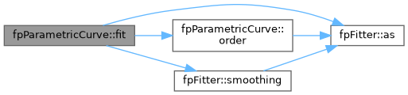
◆ fit() [2/4]
|
inline |
Refit the current points with a new smoothing.
◆ fit() [3/4]
|
inline |
Refit the current points with a new smoothing and spline order.
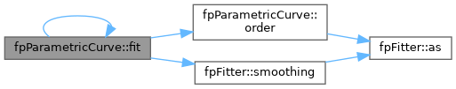
◆ fit() [4/4]
|
inline |
Refit the current points with a new spline order.
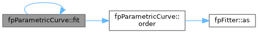
◆ has_params()
|
inline |
◆ idim() [1/2]
|
inline |
◆ idim() [2/2]
|
inline |

◆ interpolate()
|
inlinevirtual |
Reimplemented in fpClosedCurve, and fpConstrainedCurve.
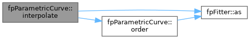
◆ is_allocated()
|
inlineoverridevirtual |
Check if object is allocated.
Reimplemented from fpFitter.
◆ is_pointer()
|
inlineoverridevirtual |
Check if this is a non-owning pointer.
Reimplemented from fpFitter.
◆ knots() [1/2]
|
inline |

◆ knots() [2/2]
|
inline |
◆ least_squares()
|
inlinevirtual |
Reimplemented in fpClosedCurve, and fpConstrainedCurve.
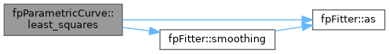
◆ m() [1/2]
|
inline |
◆ m() [2/2]
|
inline |

◆ make_view()
|
inlinestatic |
Construct an empty (non-owning) wrapper, for use as a view target.
The returned object has a null handle (cptr==nullptr, is_pointer==false) and does NOT allocate a Fortran object. Intended as a fill target for member-view accessors emitted on parent types — the parent populates the handle with c_loc() into its own storage and sets is_pointer=true.
◆ mse()
|
inlineoverridevirtual |
◆ ndim()
|
inline |
Number of space dimensions of the fitted curve.
◆ nest() [1/2]
|
inline |

◆ nest() [2/2]
|
inline |
◆ new_fit() [1/4]
|
inline |
Fit a new curve through the points at parameter values u, with weights w.
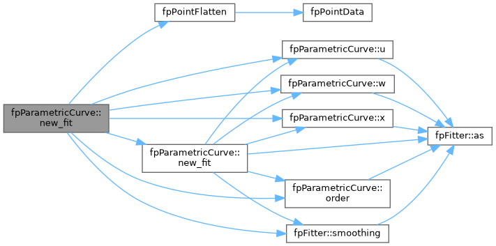
◆ new_fit() [2/4]
|
inline |
Fit a new curve through the points at the given parameter values u.
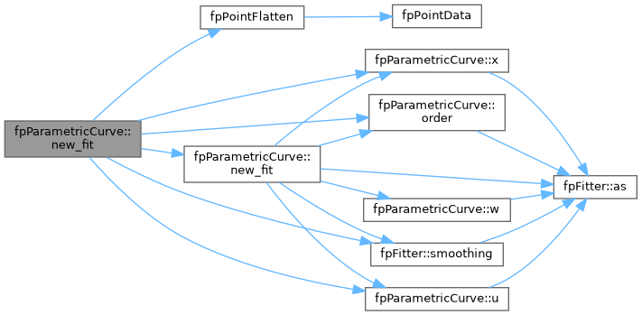
◆ new_fit() [3/4]
|
inline |
Fit a new curve through the points, choosing u by cumulative Euclidean distance.
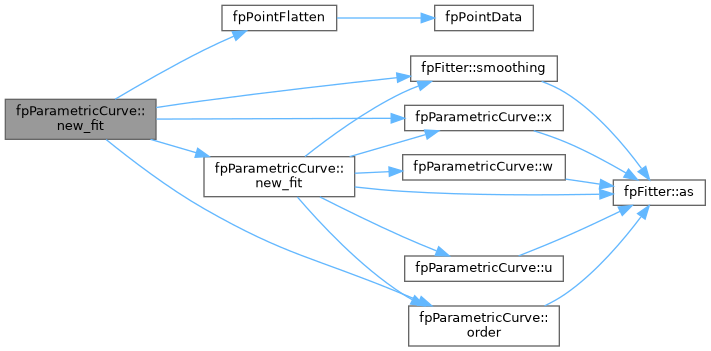
◆ new_fit() [4/4]
|
inlinevirtual |
new_fit
Reimplemented in fpClosedCurve, and fpConstrainedCurve.
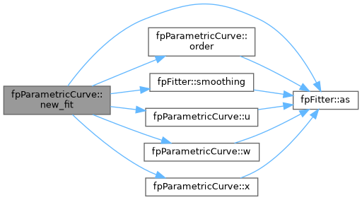
◆ new_points()
|
inlinevirtual |
new_points
Reimplemented in fpClosedCurve, and fpConstrainedCurve.
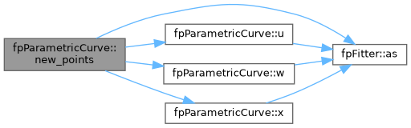
◆ operator=() [1/2]
|
inline |
Copy assignment - deep copy.
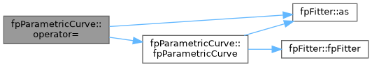
◆ operator=() [2/2]
|
inlinenoexcept |
Move assignment - transfer ownership.

◆ order() [1/2]
|
inline |

◆ order() [2/2]
|
inline |
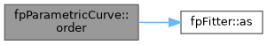
◆ set_default_parameters()
|
inlinevirtual |
Reimplemented in fpClosedCurve, and fpConstrainedCurve.
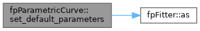
◆ set_has_params()
|
inline |
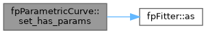
◆ sp()
|
inline |
Zero-copy fxArray view of component 'sp'.
array_c_from_ptr builds the descriptor from the borrowed pointer and bounds, so the view aliases the Fortran storage directly — nothing is copied and writes through sp()(i) land in the object.
- Note
- Only available when the Fortran-Arrays library is present and enabled (HAVE_FXARRAY).
- Warning
- The view is invalidated by any refit, assignment or destroy call on this object; re-read it rather than retaining it.
◆ sp_vector()
|
inline |
Deep copy of component 'sp' as a std::vector.
- Returns
- An owning copy, empty when the component is unallocated.
◆ t()
|
inline |
Zero-copy fxArray view of component 't'.
array_c_from_ptr builds the descriptor from the borrowed pointer and bounds, so the view aliases the Fortran storage directly — nothing is copied and writes through t()(i) land in the object.
- Note
- Only available when the Fortran-Arrays library is present and enabled (HAVE_FXARRAY).
- Warning
- The view is invalidated by any refit, assignment or destroy call on this object; re-read it rather than retaining it.
◆ t_vector()
|
inline |
Deep copy of component 't' as a std::vector.
- Returns
- An owning copy, empty when the component is unallocated.
◆ u()
|
inline |
Zero-copy fxArray view of component 'u'.
array_c_from_ptr builds the descriptor from the borrowed pointer and bounds, so the view aliases the Fortran storage directly — nothing is copied and writes through u()(i) land in the object.
- Note
- Only available when the Fortran-Arrays library is present and enabled (HAVE_FXARRAY).
- Warning
- The view is invalidated by any refit, assignment or destroy call on this object; re-read it rather than retaining it.
◆ u_vector()
|
inline |
Deep copy of component 'u' as a std::vector.
- Returns
- An owning copy, empty when the component is unallocated.
◆ ubegin() [1/2]
|
inline |
◆ ubegin() [2/2]
|
inline |

◆ uend() [1/2]
|
inline |

◆ uend() [2/2]
|
inline |
◆ w()
|
inline |
Zero-copy fxArray view of component 'w'.
array_c_from_ptr builds the descriptor from the borrowed pointer and bounds, so the view aliases the Fortran storage directly — nothing is copied and writes through w()(i) land in the object.
- Note
- Only available when the Fortran-Arrays library is present and enabled (HAVE_FXARRAY).
- Warning
- The view is invalidated by any refit, assignment or destroy call on this object; re-read it rather than retaining it.
◆ w_vector()
|
inline |
Deep copy of component 'w' as a std::vector.
- Returns
- An owning copy, empty when the component is unallocated.
◆ x()
|
inline |
Zero-copy fxArray view of component 'x'.
array_c_from_ptr builds the descriptor from the borrowed pointer and bounds, so the view aliases the Fortran storage directly — nothing is copied and writes through x()(i, j) land in the object.
- Note
- Only available when the Fortran-Arrays library is present and enabled (HAVE_FXARRAY).
- Warning
- The view is invalidated by any refit, assignment or destroy call on this object; re-read it rather than retaining it.
◆ x_shape()
|
inline |
Extents of component 'x', leading dimension first.
- Returns
- All zeros when the component is unallocated.
◆ x_vector()
|
inline |
Deep copy of component 'x' as a std::vector.
The rank-2 component is flattened COLUMN-MAJOR (Fortran order): element (i, j, ...) — zero-based — is at index i + j * extents[0] + ... Query the extents with x_shape().
- Returns
- An owning copy, empty when the component is unallocated.
The documentation for this class was generated from the following file: